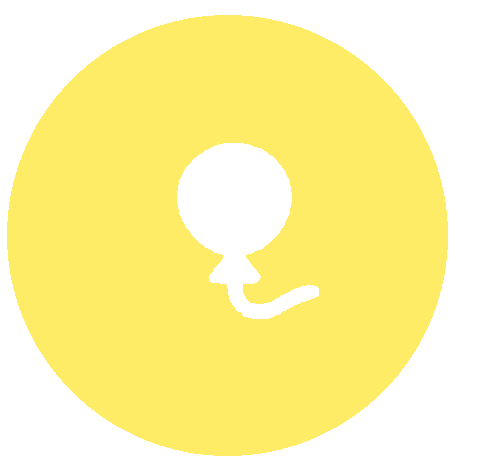

Organização
Os Nossos Núcleos
5 núcleos especializados que trabalham em conjunto para o sucesso da associação
Estrutura Organizacional
A VO.U. está organizada em 5 núcleos funcionais, cada um com responsabilidades específicas que, em conjunto, garantem o funcionamento eficaz da Associação e o sucesso dos nossos Projetos de voluntariado. Apenas os Núcleos Criativo, Cultural e Externo têm vagas abertas a voluntários.
Responsabilidades
- Gestão de Redes Sociais
- Design Gráfico
- Produção Audiovisual
- Manutenção do Website
- Gestão de imagem em colaboração com o Núcleo Externo
Núcleo Criativo
Dar cor e voz à identidade da VO.U.

Núcleo Cultural
Unir a comunidade e celebrar o voluntariado
Responsabilidades
- Dinamização de Teambuilding
- Apoio Logístico e Cultural
- Divulgação Institucional
- Integração de Voluntários
- Fortalecimento de Equipa
Núcleo Externo
Construir pontes com o exterior
Responsabilidades
- Estabelecimento de Parcerias Estratégicas
- Networking e Relações Institucionais
- Angariação de Fundos e Recursos
- Comunicação Externa
- Gestão de Patrocínios e Donativos
Responsabilidades
- Acompanhamento de Projetos
- Gestão de Processos de Voluntariado
- Consultoria e Apoio Estrutural
- Mediação e Gestão de Conflitos
- Monitorização do Bem-Estar
Núcleo Interno
Sustentar as bases e o crescimento dos projetos
Núcleo de Gestão
Guiar a visão e assegurar o futuro da associação
Responsabilidades
- Gestão Estratégica da Associação
- Administração Financeira e Tesouraria
- Representação Institucional
- Gestão Administrativa e Jurídica
- Coordenação da Direção